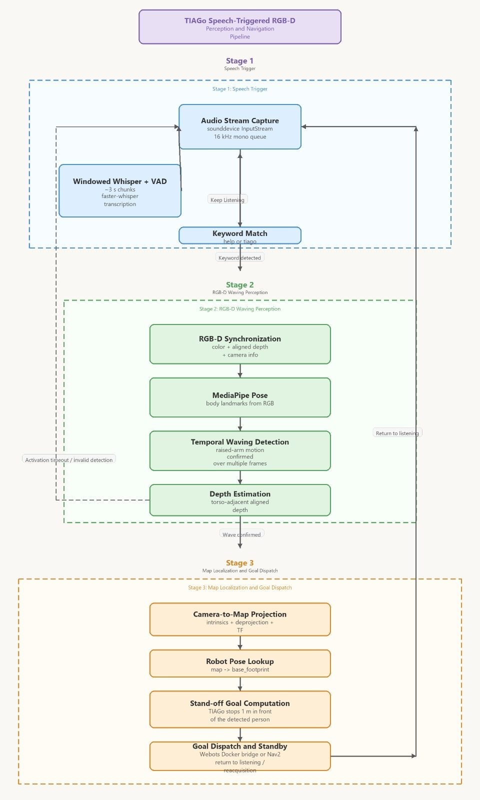
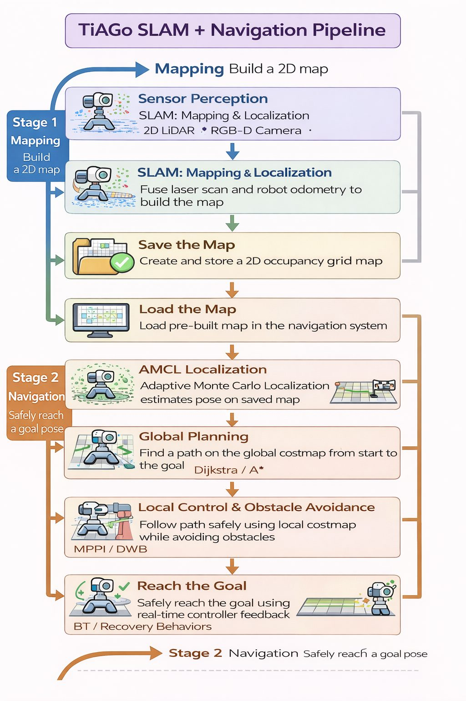
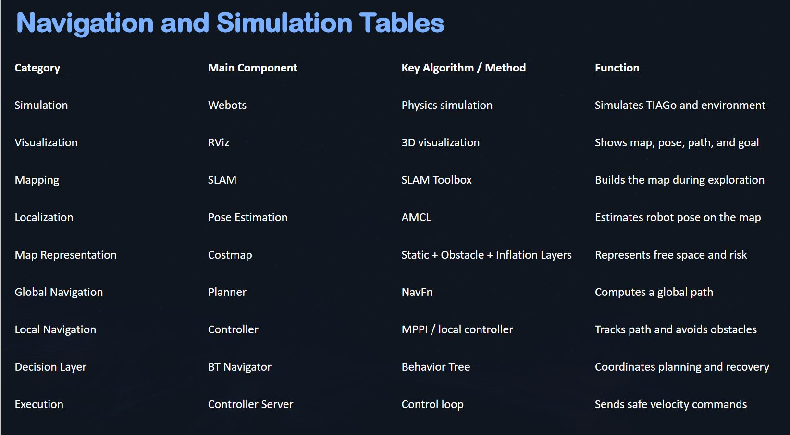
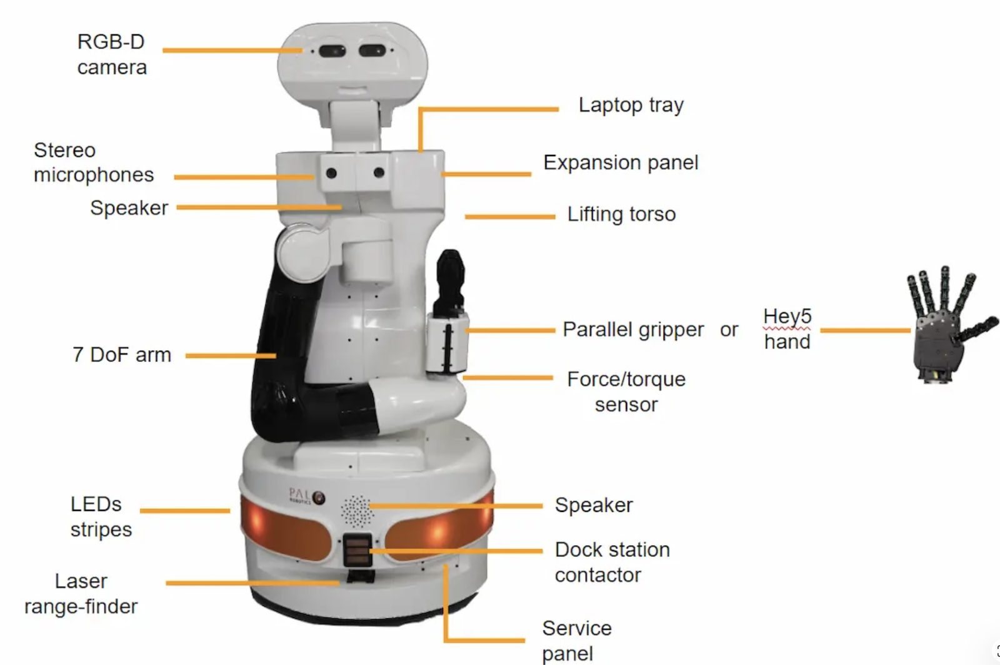
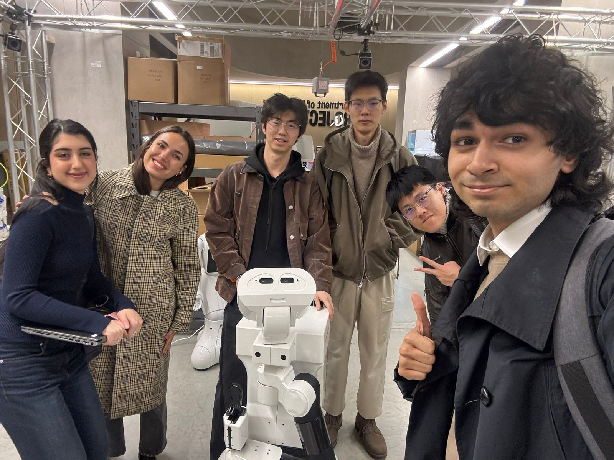
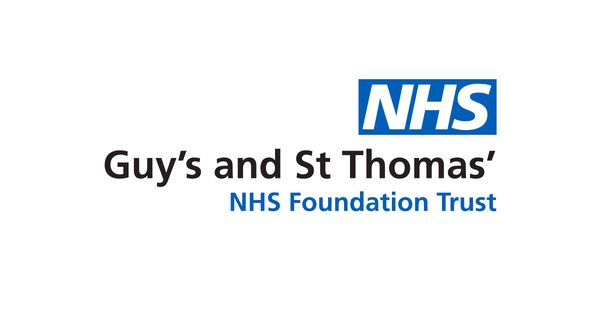
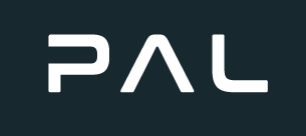

Can a ward robot notice a patient who needs help, reach them safely, and stay out of the way of clinical staff?
病房里的机器人能否察觉需要帮助的患者、安全地走到他们身边，又不打扰医护工作？
Chemotherapy patients sit for hours and often need small things—water, a blanket, a question answered. Each request is simple, but together they interrupt nurses all day. After a site visit to St Thomas’ Hospital and discussions with nursing staff, we scoped a socially assistive robot that handles these low-acuity requests, stays within clear safety boundaries, and defers anything clinical to staff.
化疗患者要在座椅上待几个小时，经常需要一些小事——倒水、拿毯子、问个问题。每个请求都很简单，但加在一起会一整天打断护士的工作。我们实地走访了 St Thomas’ 医院并与护理人员交流后，确定了项目范围：一个处理这类低急迫度请求的社交辅助机器人，在明确的安全边界内工作，任何临床事务都交还给医护人员。
The ward layout we built reflects what we saw: a central corridor, treatment bays on both sides with chairs and IV stands, a nurse station and a waiting area. That layout drove every design decision—the corridor is the default traversal zone, the bays need conservative short-range control, and a request can come from either side, so gestures must be detected across bilateral viewing angles.
我们搭建的病房布局来自现场观察：中央走廊、两侧带座椅和输液架的治疗区、护士站和候诊区。这个布局决定了所有设计——走廊是默认通行区，治疗区需要保守的近距离控制，求助可能来自两侧，所以手势检测必须覆盖双侧视角。



Official TIAGo tutorials were ROS 1-centred; PAL’s ROS 2 simulation repository needed hardware and operating systems that not every team member could run, and Gazebo performed poorly on our laptops. A simulator is useless if only one person can run it. I evaluated Gazebo Classic, Gazebo Fortress, NVIDIA Isaac Sim and Webots on ROS 2 support, TIAGo availability, GPU demand and team-wide reproducibility, and chose Webots inside the containerised HuNavSim framework. It was not the most realistic option—it was the one the whole team could run and test on repeatably.
官方 TIAGo 教程以 ROS 1 为主；PAL 的 ROS 2 仿真仓库对硬件和操作系统有要求，不是每个组员都能运行，Gazebo 在我们的笔记本上也跑得很差。一个只有一个人能跑的仿真器没有意义。我从 ROS 2 支持、TIAGo 可用性、GPU 需求和全组可复现性四个维度评估了 Gazebo Classic、Gazebo Fortress、NVIDIA Isaac Sim 和 Webots，最终选择了容器化 HuNavSim 框架中的 Webots。它不是最逼真的选项，但它是全组都能运行、都能反复测试的选项。
The navigation stack is Nav2 in its standard layering: LiDAR and RGB-D sensing build an occupancy map by teleoperated exploration; AMCL estimates pose against the saved map; costmaps add an inflation layer around the robot footprint so routes stay clear of beds, chairs and IV stands; NavFn plans globally; the DWB controller samples velocities to follow the path and avoid moving people; behaviour trees handle replanning and recovery. Once perception confirms a request, the patient’s map-frame position becomes a stand-off goal one metre short, facing the patient.
导航栈采用标准分层的 Nav2：LiDAR 与 RGB-D 通过遥操作探索建立栅格地图；AMCL 基于保存的地图估计位姿；代价地图在机器人足迹周围加入膨胀层，使路径远离病床、座椅和输液架；NavFn 做全局规划；DWB 控制器采样速度跟踪路径并避开移动的人；行为树负责重规划与恢复。感知确认求助后，患者在地图系中的位置转换为距其一米、正对患者的停靠目标。
Speech alone should not send a robot toward someone, and neither should a stray arm movement. The pipeline begins in a passive listening state: Faster-Whisper with voice-activity detection transcribes 3-second audio windows and matches keywords such as “help” and “tiago”. A match activates the visual stage, where MediaPipe pose estimation feeds a temporal wave detector—waving is sustained lateral wrist motion over several frames with the wrist above the shoulder. Only then is the person’s torso located from median-filtered RGB-D depth, projected through the camera intrinsics into the map frame, and published as a navigation goal.
单凭语音不该让机器人冲向某人，一次随意的抬手也不该。流水线从被动监听开始：Faster-Whisper 配合语音活动检测转写 3 秒的音频窗口并匹配“help”“tiago”等关键词；匹配后激活视觉阶段，MediaPipe 姿态估计送入时序挥手检测器——“挥手”定义为手腕高于肩膀、且在连续多帧中持续横向运动。只有这时才用中值滤波后的 RGB-D 深度定位人体躯干，经相机内参投影到地图坐标系，发布为导航目标。


Testing ran in Webots with static obstacles and dynamic agents representing patients and staff, ten trials per condition, metrics pulled from ROS 2 logs. Navigation was consistent; where the system fell short it was the perception stage, not navigation—which is the honest reading of the gap between 92% and 94%.
测试在 Webots 中进行，场景包含静态障碍和代表患者与医护的动态行人，每种条件 10 次试验，指标来自 ROS 2 日志。导航表现稳定；系统的短板在感知阶段而不是导航——这也是 92% 与 94% 之间差距的真实含义。
| Metric指标 | Value数值 | Metric指标 | Value数值 |
|---|---|---|---|
| Full task completion time完整任务用时 | 74.3 s | Detection precision / recall / F1检测精确率 / 召回率 / F1 | 92.6 / 89.8 / 91.2 % |
| Path efficiency路径效率 | 87.5 % | Target localisation error目标定位误差 | 0.21 m |
| Collisions per trial每次试验碰撞次数 | 0.1 | Recovery events per trial每次试验恢复行为次数 | 0.3 |
| Final orientation error终点朝向误差 | 7.4° | Manual interventions per trial每次试验人工干预次数 | 0.2 |

